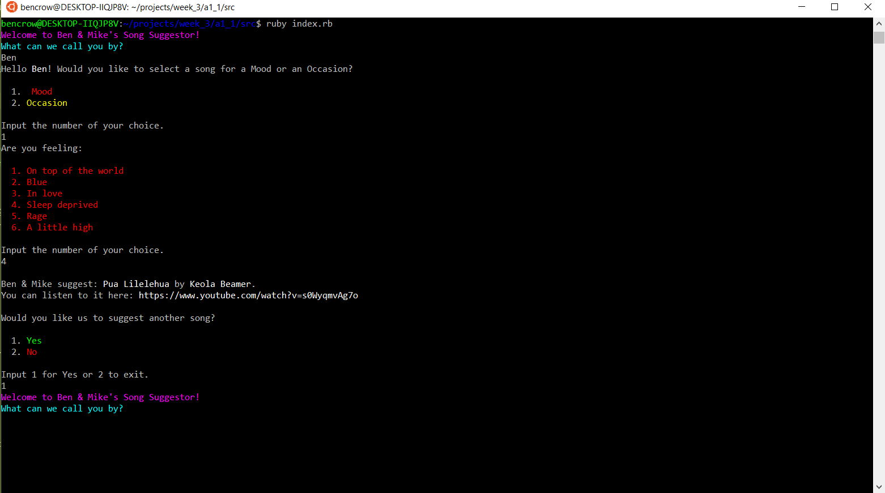
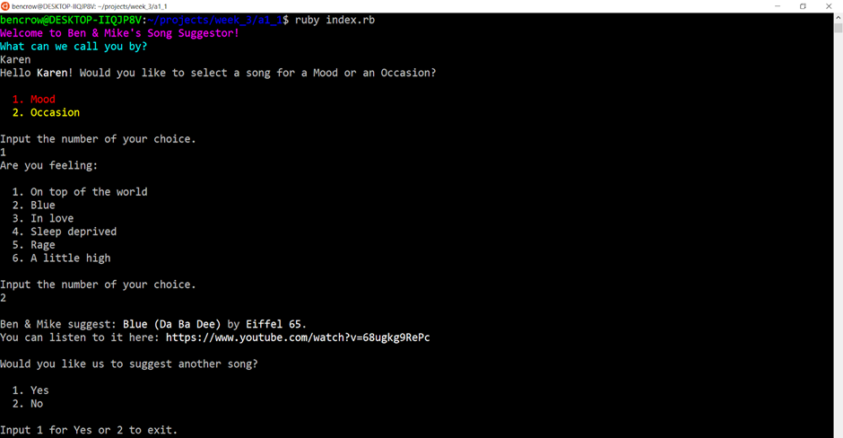
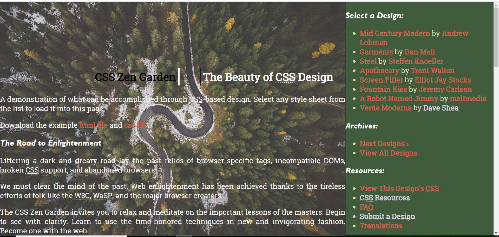

This game is the first fully functional terminal app that I built using python. It utilizes classes, methods, functions, python packages, variables, user input and more. I built an earlier version following a tutorial on Stackskills. For this version I started from scratch, only using the early version for reference. I avoided copy-pasting to ensure I fully understood the various coding skills involved.
For our first assignment we were tasked to create a Ruby terminal application (app) in pairs. My partner Mike and I decided to make a program that would recommend a song based on your mood or an occasion. We looked at Spotify for our case study and observed how many steps it took to discover a song that we enjoyed. We wondered if there was a way to shorten and simplify these steps. This was the mission statement which we wrote. “Finding a song that fits your mood or occasion takes effort. Imagine if Ben & Mike chose the music for you. With Ben & Mike’s Song Suggestor, you can listen to curated tunes in just a few clicks.”
 The following is a screenshot of my early efforst to style a prebuilt html file. The html is taken from Css Zen Garden. The site is an effort to provide the tech community with a way to demosntrate the power of css.
